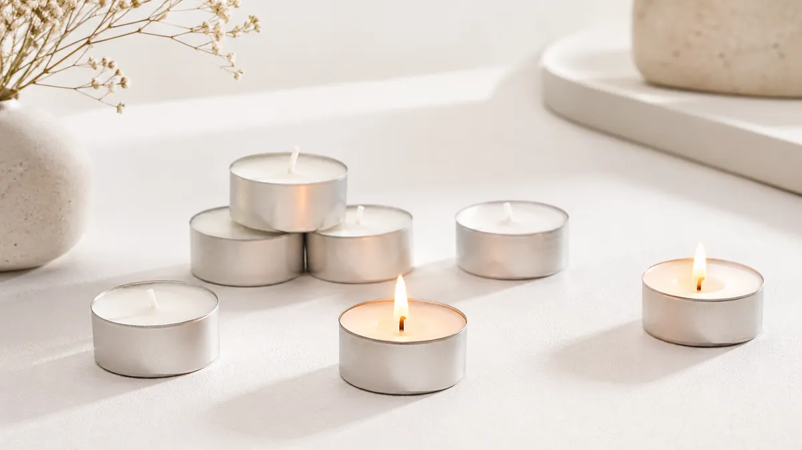
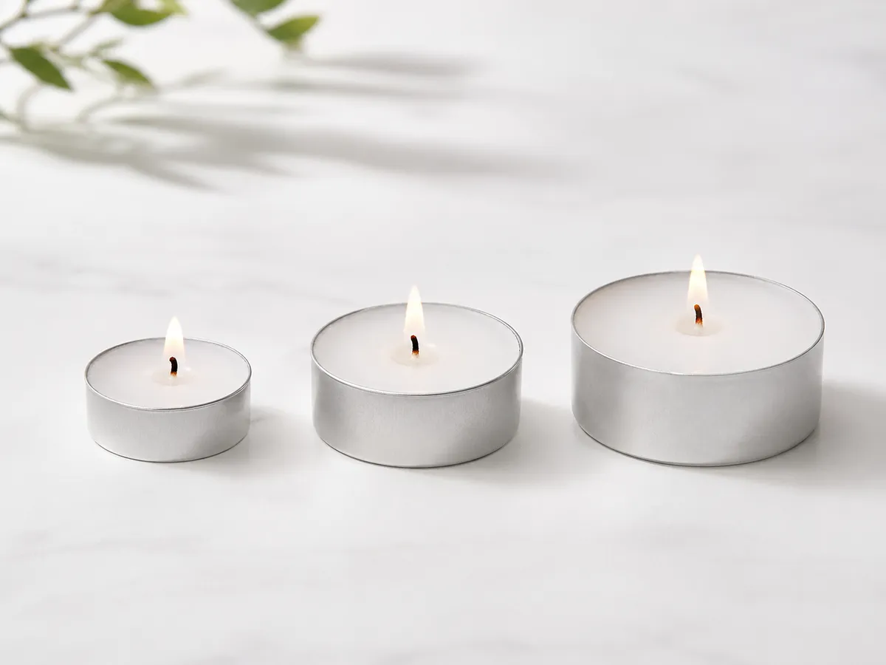
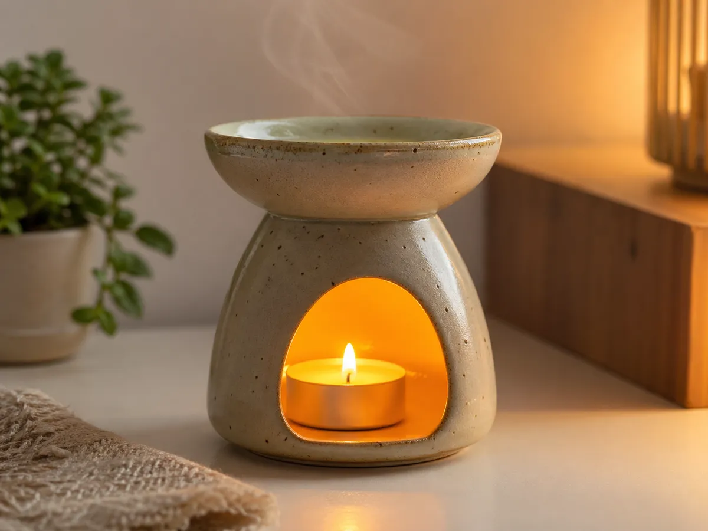
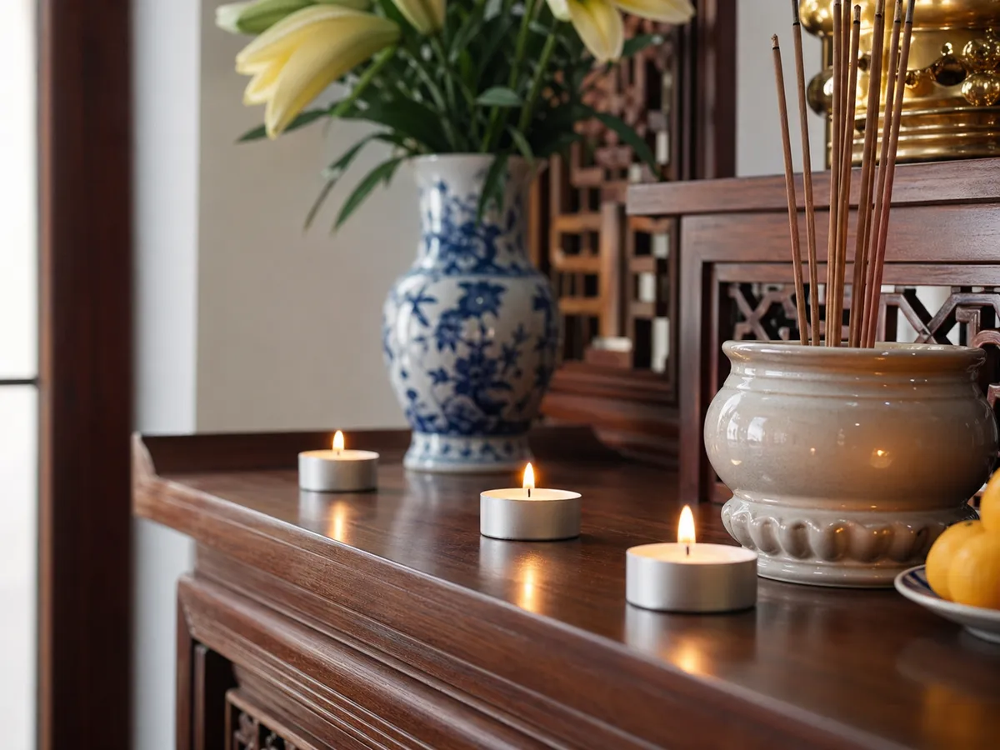

Phân biệt nến 2h nến 4h nến 8h dùng cho mục đích gì

Khi mua nến tealight, bạn sẽ thấy có các loại cháy 2h, 4h, hoặc thậm chí 8h. Nhưng chúng khác nhau ở đâu? Làm sao để chọn nến phù hợp cho bàn thờ, xông tinh dầu hay trang trí phòng? Bài viết này sẽ giúp bạn hiểu rõ từng loại nến, từ đó lựa chọn đúng sản phẩm không khói không mùi chất lượng cao.
1. Tại sao cần phân biệt nến 2h, nến 4h, nến 8h?
Mỗi loại nến tealight có thời gian cháy khác nhau không phải vô lý. Chênh lệch này tùy thuộc vào khối lượng sáp, độ dày của nến và kích thước tim nến. Hiểu được sự khác biệt này giúp bạn:
- Tiết kiệm chi phí — không mua nến quá lâu hoặc quá nhanh hết
- An toàn hơn — tránh để nến cháy quá lâu trong không gian kín hoặc khi vắng nhà
- Hiệu quả tốt hơn — chọn đúng loại nến xông tinh dầu hay thơm phòng sẽ mang lại hương thơm vừa đủ, không quá nồng

2. Cách chọn nến phù hợp theo mục đích sử dụng
🕯️ Nến 2 giờ — Sử dụng ngắn hạn, nhanh gọn
Khi nào dùng: Phù hợp cho các buổi tiệc ngắn, họp mặt tối thiểu 2 tiếng, hoặc khi bạn chỉ cần không gian thơm mùi trong thời gian giới hạn. Đây cũng là lựa chọn an toàn nếu bạn sợ quên tắt nến khi ra khỏi phòng.
Ưu điểm: Giá rẻ hơn, tiết kiệm, an toàn vì cháy nhanh hết. Nến 2h thường nhỏ gọn, dễ xếp hình hoặc trang trí bàn tiệc.
Nhược điểm: Chỉ cháy 2h, nên không đủ cho những buổi thưởng thức dài. Nếu dùng xông tinh dầu, mùi sẽ nhanh biến mất.
🕯️ Nến 4 giờ — Lựa chọn cân bằng, phổ biến nhất
Khi nào dùng: Đây là loại nến tealight phổ biến nhất trên thị trường. Thời gian 4h vừa đủ cho một buổi tối thư giãn, xông tinh dầu hoặc cúng lễ tại gia đình. Nến 4h cũng phù hợp với đèn xông tinh dầu vì tạo ra mùi hương ổn định, không quá nồng.
Ưu điểm: Thời gian vừa phải, mùi hương tỏa ra đều đặn, an toàn và tiết kiệm. Nến không khói không mùi 4h có giá rất hợp lý.
Nhược điểm: Nếu bạn cần nến cháy suốt đêm dài hoặc buổi tiệc lâu, 4h có thể chưa đủ.
🕯️ Nến 8 giờ — Cháy lâu, dành cho đêm dài
Khi nào dùng: Nến đốt 8 tiếng là lựa chọn tối ưu nếu bạn muốn cháy suốt đêm hoặc cả ngày dài. Loại nến này thường được sử dụng trong các studio yoga, không gian thiền định, hoặc bàn thờ gia đình nơi cần ánh sáng liên tục.
Ưu điểm: Cháy rất lâu, tiết kiệm chi phí về lâu dài (ít phải thay nến), lý tưởng cho xương tinh dầu qua đêm hoặc trang trí không gian dài ngày.
Nhược điểm: Nến 8h có kích thước lớn hơn, sáp nhiều hơn. Bạn cần lưu ý không để nến cháy quá lâu trong phòng kín vì có thể ảnh hưởng đến chất lượng không khí. Cần tắt nến trước khi ngủ để đảm bảo an toàn.
3. Nến xông tinh dầu vs nến thờ cúng — Có khác gì không?
Thực ra, nến tealight không khói không mùi có thể dùng cho cả hai mục đích. Tuy nhiên, có một số lưu ý:

3.1. Nến xông tinh dầu
Khi bạn sử dụng nến để đốt xông tinh dầu, bạn cần nến không khói, không mùi để tinh dầu là "nhân vật chính". Nến 4h hoặc 8h đều phù hợp, tuỳ độ dài buổi xông của bạn. Tim nến cần làm từ cotton 100% để ngọn lửa ổn định, giúp tinh dầu bay hơi đều, không quá nóng.
3.2. Nến cúng thờ cúng
Với mục đích thờ cúng, bạn có thể dùng bất kỳ loại nến tealight nào, từ 2h đến 8h. Tuy nhiên, nến không khói không mùi vẫn là lựa chọn tốt nhất vì không tạo khói đen bám trần nhà, giữ không gian thanh tịnh và sạch sẽ.
4. Những lưu ý quan trọng khi sử dụng nến tealight an toàn
- Cắt tim nến: Trước khi thắp, cắt tim nến ngắn để tránh ngọn lửa bập bùng hoặc tạo khói đen.
- Khoảng cách an toàn: Khi xông tinh dầu, giữ nến ít nhất 5cm cách xa bộ xông để tránh nhiệt quá cao hoặc khí bị xẹt.
- Không để nến cháy quá lâu: Ngay cả nến 8h, cũng không nên để cháy liên tục quá 4 tiếng trong phòng kín. Hãy tắt nến, mở cửa sổ để thay không khí.
- Tắt trước khi ngủ: Luôn tắt hết nến trước khi rời khỏi phòng hoặc ngủ để tránh cháy nổ.
- Chỗ đặt nến: Đặt nến trên mặt phẳng, chắc chắn, xa vật dễ cháy.

5. Mua nến tealight chính hãng ở đâu?
Để đảm bảo chất lượng và an toàn, bạn nên mua nến tealight không khói không mùi từ những nơi uy tín. Nến Phương Lâm cung cấp các sản phẩm nến tealight chuẩn, được kiểm định chất lượng, từ nến 2h, 4h đến 8h giờ, phù hợp cho mọi nhu cầu — từ xông tinh dầu, thờ cúng đến trang trí không gian sống.
Lựa chọn nến phù hợp không chỉ giúp bạn tiết kiệm chi phí mà còn đảm bảo an toàn cho gia đình và tạo ra không gian sống thơm mát, yên bình mỗi ngày.
Chọn nến tealight chất lượng cao tại Nến Phương Lâm
Nến không khói · Giao hàng toàn quốc · Kiểm tra trước khi nhận · 100% thảo mộc tự nhiên
Xem sản phẩm nến tealight →